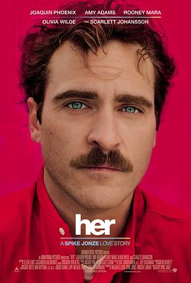

她 / Her
又名：触不到的她(港) / 云端情人(台)
长时间的异地恋其实还不如与OS谈恋爱
作品信息
| 导演 | 斯派克·琼斯 |
| 编剧 | 斯派克·琼斯 |
| 主演 | 华金·菲尼克斯 / 斯嘉丽·约翰逊 / 艾米·亚当斯 / 鲁妮·玛拉 / 奥利维亚·王尔德 / 斯派克·琼斯 / 琳恩·A·弗里德曼 / 盖布·戈麦斯 / 克里斯·帕拉特 / 梅·林德斯特罗姆 / 比尔·哈德尔 / 克里斯汀·韦格 / 布莱恩·约翰逊 / 马特·莱斯切尔 / 普拉莫德·库马尔 / 史蒂夫·齐西斯 / 格雷茜·普瑞维特 / 波茜娅·道布尔戴 / 斯蒂芬妮·索科琳斯基 / 布莱恩·考克斯 / 里奥·巴里加亚 / 琼·布莱尔 / 塞斯·凯尔 / 李·克里斯蒂安 / 尼科·戴维 / 香农·爱德华兹 / 阿莉娅·珍妮 / 仁·库恩 / 菲奥娜·林克 / 卡罗尔·麦克法登 / 杰里米·拉布 / 劳拉·柯尔孔 / 帕梅拉·罗伊兰斯 / 玛丽安·萨斯塔德·奥特森 / 伊维特·桑德斯 / 卡桑德拉·斯塔尔 / 查克·大卫·威利斯 |
| 类型 | 剧情 / 爱情 / 科幻 |
| 制片国家/地区 | 美国 |
| 语言 | 英语 |
| 上映日期 | 2013-10-12(纽约电影节) / 2014-01-10(美国) |
| 片长 | 126分钟 |
| IMDb | tt1798709 |
最后一次看到是 2026-08-12T21:13:15+08:00 · 豆瓣原页